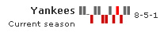

Spark Charts > Win/Loss Chart > Simple Example |
Here, we'll create a simple spark win/loss chart to show the performance of Yankees this season. |
| XML Data |
| Our fictional season's data can be converted into XML as under: |
| <chart caption='Yankees' subcaption='Current season' > <dataset> <set value='W' /> <set value='W' /> <set value='D' /> <set value='L' /> <set value='W' /> <set value='W' /> <set value='L' /> <set value='L' /> <set value='W' /> <set value='L' /> <set value='W' scoreless='1'/> <set value='L' /> <set value='W' /> <set value='W' /> </dataset> </chart> |
In the above XML, we're:
When you now view the chart, you'll get something as under: |
 Next, we'll see how to configure the various aspects of this chart. |